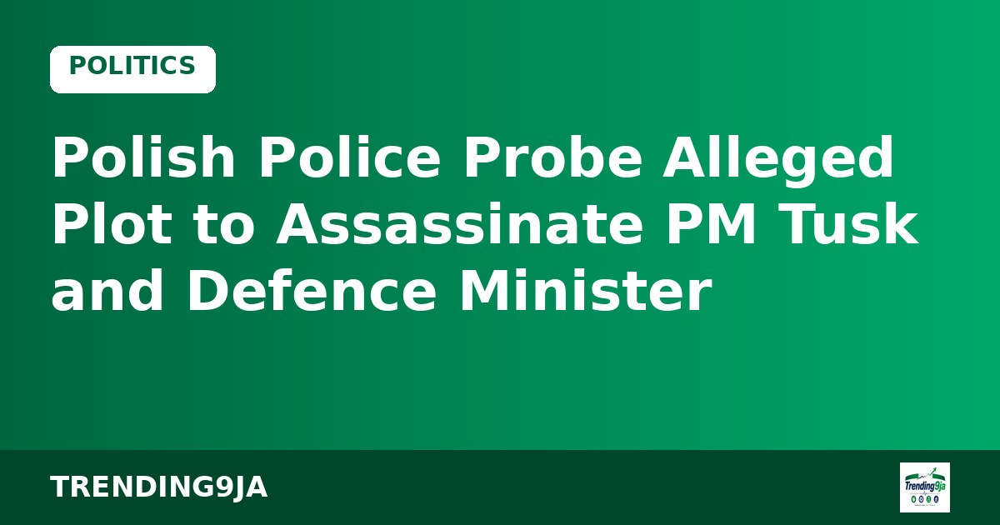
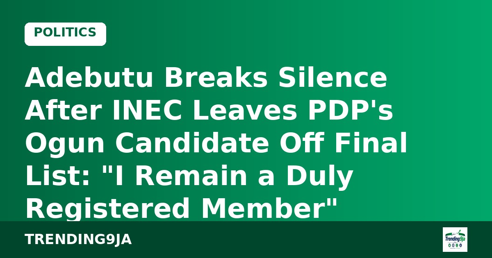

Ex-Minister Uche Nnaji Drops Degree Claim, Lists WAEC Result in INEC Filing and Promises Traders Free Shops
Nnaji resigned as science minister in October 2025 over certificate allegations and still faces a forgery trial.

File image
ARISE News has announced that political analyst Anthony Kila will no longer appear on any of its platforms following allegations that he falsified his academic credentials.
The decision came after an investigative report by Premium Times raised questions about Kila’s claimed bachelor’s, master’s, doctoral and professorial qualifications. The network said it contacted Kila on 3 October 2026 to respond to the claims. He requested more time but had not replied 10 days later, by which point the allegations had intensified.
In a disclaimer issued by its Editorial Board, ARISE stated that Kila’s contributions were “no longer tenable” and that he would not appear on the channel “at any time now or in the future.” The station added that it was unaware of the allegations when he previously appeared as a freelance analyst.
Kila has been a frequent guest on Nigerian television political programmes. The episode has sparked wider conversation about credential verification in media and public life.
Sources: Naija News · Punch
← More Politics storiesNnaji resigned as science minister in October 2025 over certificate allegations and still faces a forgery trial.

An emergency meeting was held on Sunday after police received information about a possible threat.

The PDP candidate points to "undue pressure" from the APC on INEC and says the party will pursue the matter through "appropriate channels".
CP Ibrahim Adamu Bakori cites a Sabon Gari arrest two weeks ago and says he wanted details of the roughly 700 expected attendees.

Atiku and Obi question what happens after the 30 days, while the NLC's two-week ultimatum runs to about 23 October.